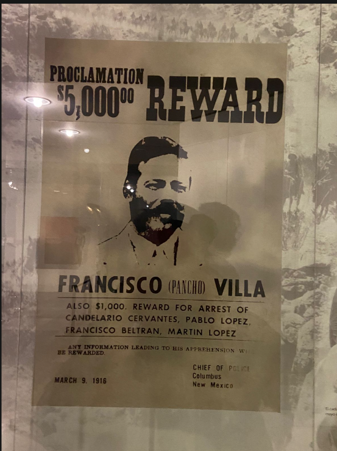
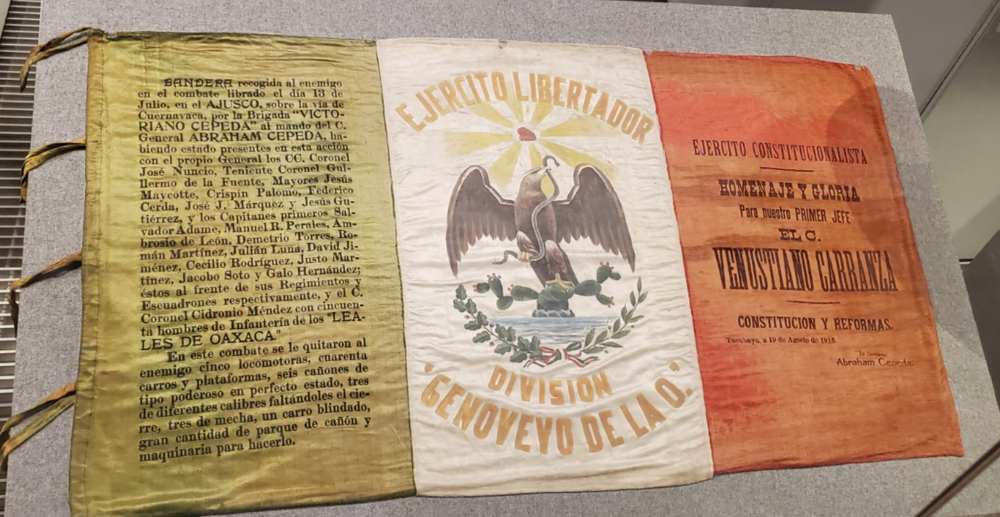
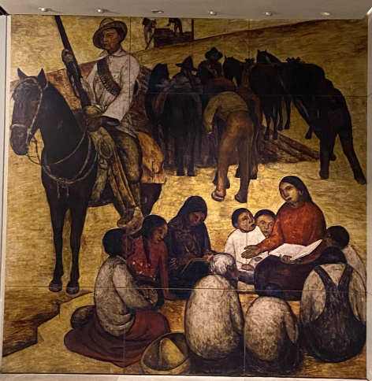

Sala 6 - La guerra civil y la Constitución (1914-1917)
La guerra civil y la Constitución
1914 - 1917
Tras la derrota del huertismo, la Revolución se fragmentó en una dolorosa guerra civil entre las facciones triunfantes. Esta sala examina el proceso de pacificación a través de las leyes, culminando en el Congreso Constituyente de Querétaro, donde se redactó la carta magna más avanzada de su tiempo.
El desacuerdo entre carrancistas, villistas y zapatistas llevó a la histórica Convención de Aguascalientes. Aquí se analizan los intentos fallidos de conciliación que derivaron en el periodo más sangriento de la lucha armada, obligando a los líderes a buscar una salida política definitiva para la nación.
En 1917, el Teatro de la República en Querétaro fue testigo del nacimiento de un nuevo orden. Este bloque destaca los artículos 3º, 27º y 123º, los cuales integraron por primera vez los derechos sociales, la soberanía sobre los recursos naturales y la protección al trabajador en el corazón de la Constitución.

Convención de Aguascalientes

Congreso Constituyente

Constitución de 1917